Finding 01
Activation
Missed cashback rewards.
Incorrect or incomplete activation led to lost rewards — users didn't know they'd missed the window until it was too late.
From reactive email support to a
structured self-service product.
Loopingo provides performance marketing solutions for online stores, including a cashback product designed to drive customer acquisition. As the product grew, cashback activation and redemption were handled entirely through email, with no structured experience for users.
I designed a self-service platform that introduced a clear flow, enabling users to manage cashback independently.
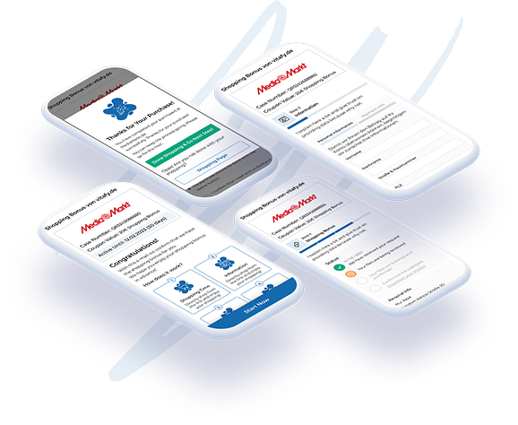
Reviewing customer feedback and support interactions revealed that users struggled to understand, track, and complete cashback actions. This led to missed cashback opportunities and increased operational load.
Incorrect or incomplete activation led to lost rewards — users didn't know they'd missed the window until it was too late.
Offer rules were unclear and easy to misunderstand, leading users to make errors that voided their cashback.
Submissions were often wrong or incomplete — users had no guidance on what was needed or how to format it.
Users couldn't see where they were in the process or what status their cashback claim had reached.
Key actions required manual intervention from support — creating bottlenecks and delays for both users and the team.
Designing a solution required balancing user trust, operational workflows, and system constraints.
Users were asked to share bank details without understanding why or what would happen next.
The flow had to reduce support load without breaking existing workflows.
Backend systems limited what could be shown and validated in real time.
The solution was to turn an email-based manual support process into a structured product flow that users could complete themselves.
The new flow defined how users would move through cashback activation, submission, payment validation, and tracking. This was the first time the process became visible to users, replacing an unclear, email-based interaction.
The flow needed to support delayed validation, missing documents, and multiple payment outcomes.
Early wireframes explored the structure of the dashboard: what users needed to see, what information they needed to provide, and how status should be communicated.
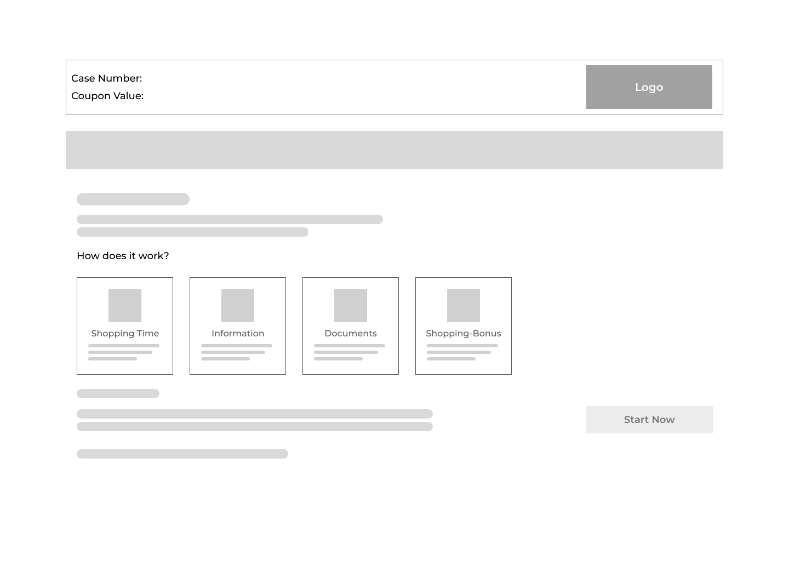
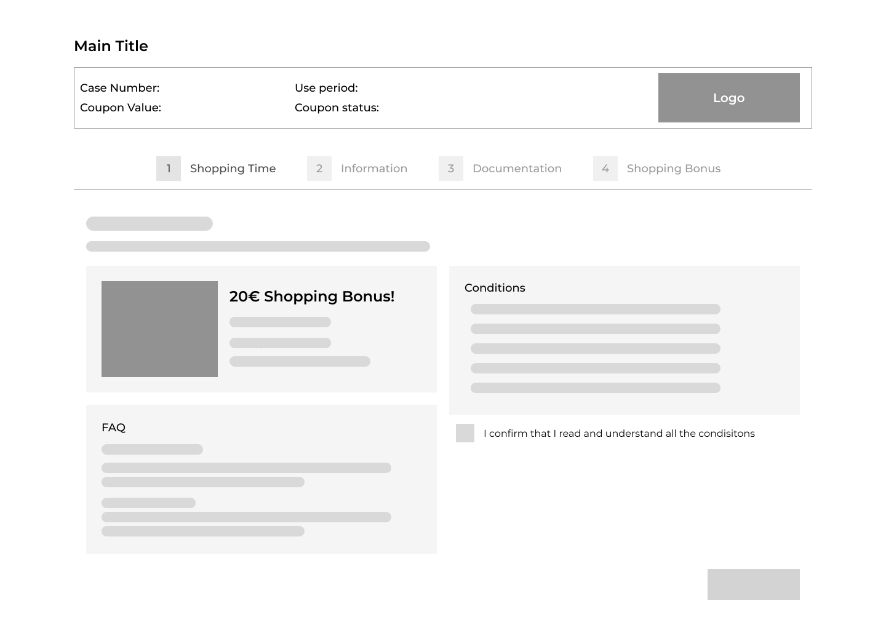
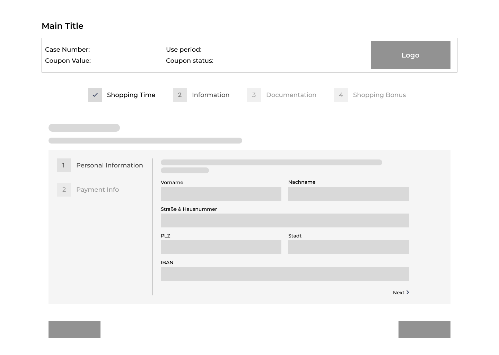
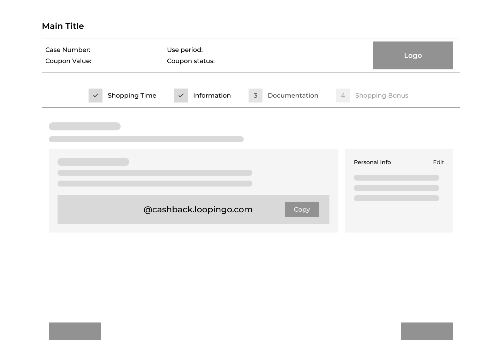
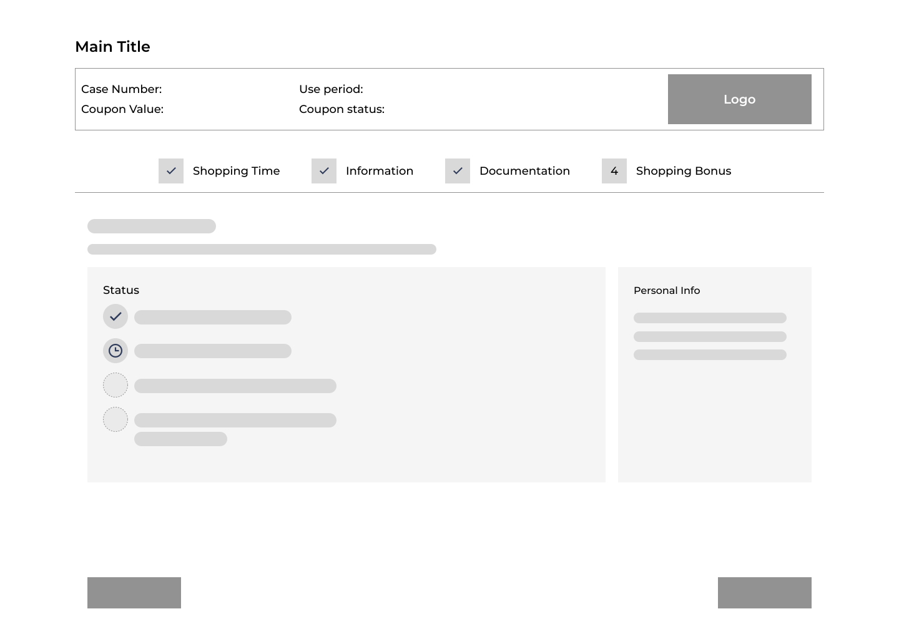
The final design transformed the process into a dashboard-based experience, where users could clearly understand what to do and complete each step with confidence.
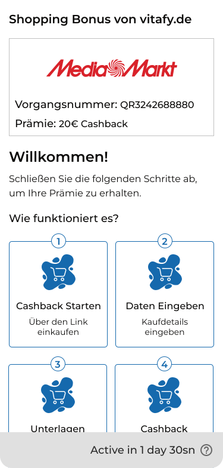
Waiting to unlock — clear status while validation is in progress.
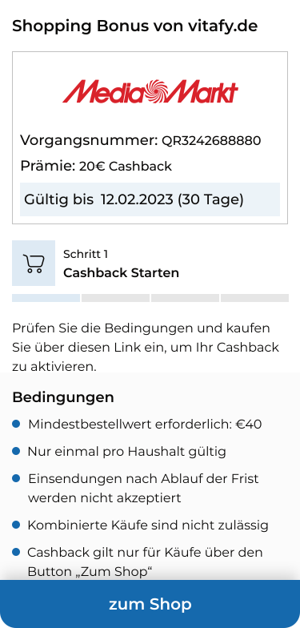
Activate cashback through a clear and structured entry point.
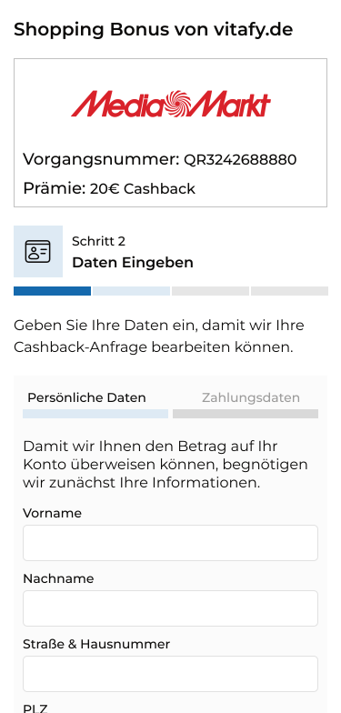
Understand conditions through cleaner, digestible formats.
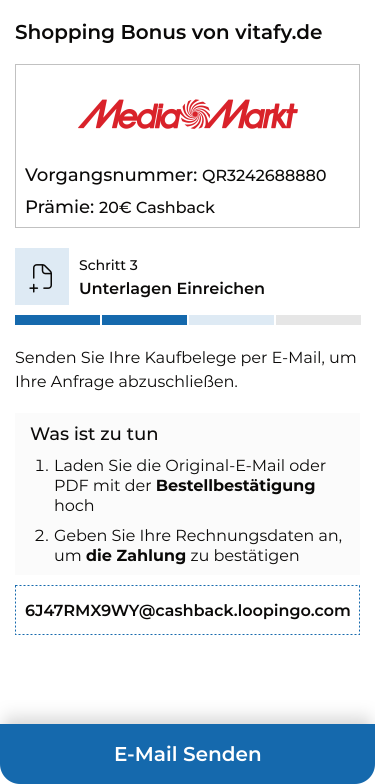
Submit required documents with guided steps.
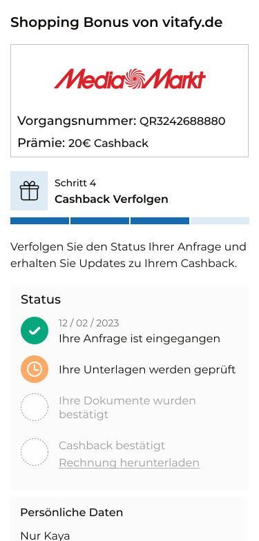
Reduce uncertainty with visible progress and validation states.
Initial designs revealed that users still struggled to understand conditions and submission status.
Instead of listing terms and conditions as static text, users were guided through key steps in a more structured format, which they reviewed and accepted at the end.
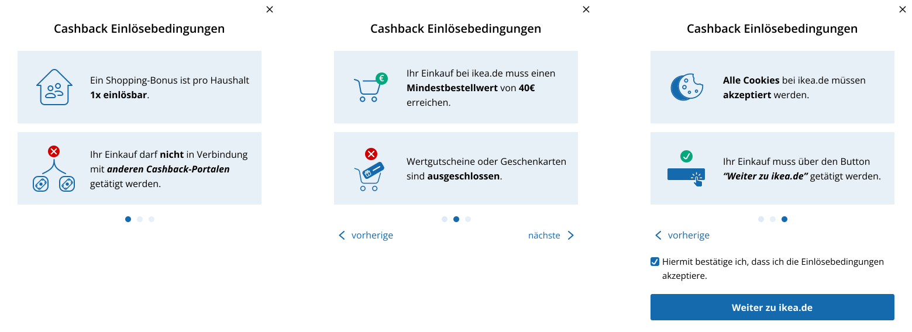
If documents were received, users saw a success message. If not, users needed reassurance when validation wasn't immediate.
Fewer support requests after the self-service flow launched.
Based on the customer support team's report.
I led the design of the cashback tracker from discovery to final handoff — mapping the existing process, identifying breakdowns, defining the flow, and delivering production-ready specs.
Mapped the end-to-end cashback process across activation, validation, tracking, and payout stages.
Defined how different cashback scenarios, payment methods, and document requirements would behave within the flow.
Structured the dashboard experience around user actions, operational states, and required inputs.
Explored and iterated on ways to communicate conditions, missing steps, and delayed validation more clearly.
Worked closely with engineering to align the experience with backend and operational constraints.
The tracker gave merchants visibility they never had before. Each iteration surfaced new requirements for automated alerting and deeper analytics.
This project showed that the main issue wasn't process complexity, but the lack of clarity, visibility, and ownership for users.
The platform turned an email-based process into a structured product experience, helping users understand what to do, what was happening, and what came next — without relying heavily on support.